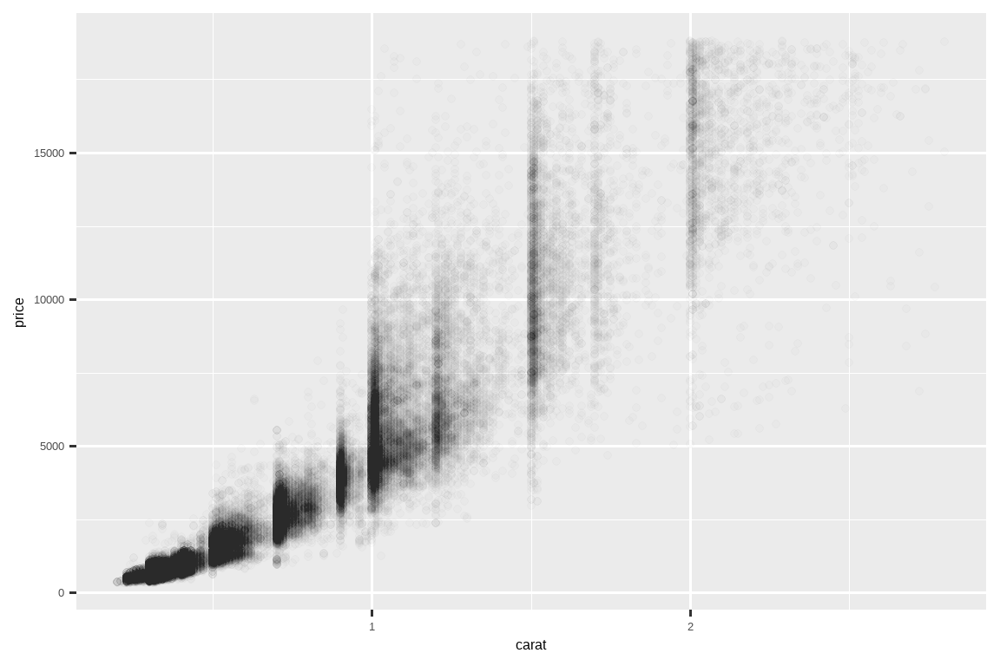

10 探索性数据分析
10.1 引言
本章将向你展示如何使用可视化和转换来系统地探索数据，统计学家称这项任务为探索性数据分析 (exploratory data analysis)，简称 EDA。 EDA 是一个迭代循环。 你需要：
生成关于数据的问题。
通过可视化、转换和建模来寻找答案。
利用你学到的知识来完善你的问题和/或生成新的问题。
EDA 不是一个有着严格规则的正式流程。 更重要的是，EDA 是一种思维状态。 在 EDA 的初始阶段，你应该自由地探索你脑海中出现的每一个想法。 有些想法会成功，有些则会是死胡同。 随着探索的深入，你将逐渐聚焦于一些特别富有成效的见解，并最终将它们整理成文，与他人交流。
EDA 是任何数据分析的重要组成部分，即使主要的研究问题已经现成地交给你，因为你总是需要调查数据的质量。 数据清理只是 EDA 的一个应用：你提出关于数据是否符合预期的问题。 要进行数据清理，你需要运用所有 EDA 的工具：可视化、转换和建模。
10.1.1 先决条件
在本章中，我们将结合你所学的 dplyr 和 ggplot2 知识，以交互方式提出问题，用数据回答问题，然后再提出新的问题。
10.2 问题
“没有常规的统计问题，只有值得怀疑的统计程序。(The greatest value of a picture is when it forces us to notice what we never expected to see.)”
— David Cox
“对正确问题的近似答案，远胜于对错误问题的精确答案；前者通常是模糊的，而后者总是可以做得很精确。(Far better an approximate answer to the right question, which is often vague, than an exact answer to the wrong question, which can always be made precise.)”
— John Tukey
你在 EDA 过程中的目标是建立对数据的理解。最简单的方法是使用问题作为工具来引导你的探索。当你提出一个问题时，这个问题会将你的注意力集中到数据集的特定部分，并帮助你决定制作哪种图表、模型或进行何种转换。
EDA 本质上是一个创造性的过程。和大多数创造性过程一样，提出高质量问题的关键在于生成大量的问题。在分析之初很难提出有启发性的问题，因为你不知道可以从数据集中获得哪些见解。另一方面，你每提出一个新问题，都会让你接触到数据的一个新方面，增加你做出发现的机会。如果你在每个问题之后，都根据你的发现提出一个新问题，你就能迅速深入到数据最有趣的部分，并形成一系列引人深思的问题。
关于应该提出什么问题来指导研究，没有固定的规则。然而，有两类问题对于在数据中做出发现总是很有用的。你可以将这些问题粗略地表述为：
我的变量内部存在什么样的变异？
我的变量之间存在什么样的协变？
本章的其余部分将探讨这两个问题。我们将解释什么是变异和协变，并向你展示几种回答每个问题的方法。
10.3 变异
变异 (Variation) 是指一个变量的值在不同测量中变化的趋势。你在现实生活中可以轻易看到变异；如果你对任何连续变量进行两次测量，你会得到两个不同的结果。即使你测量的是恒定的量，比如光速，也是如此。你的每一次测量都会包含少量的误差，这个误差在每次测量中都会有所不同。如果你在不同的主体（例如，不同人的眼睛颜色）或不同的时间（例如，一个电子在不同时刻的能量水平）进行测量，变量也会发生变化。每个变量都有其自身的变异模式，这可以揭示关于它在同一次观测的不同测量之间以及跨观测之间如何变化的有趣信息。理解这种模式的最佳方法是可视化变量值的分布，这在 Chapter 1 中你已经学过了。
我们将通过可视化 diamonds 数据集中约 54,000 颗钻石的重量（carat）分布来开始我们的探索。由于 carat 是一个数值变量，我们可以使用直方图：
ggplot(diamonds, aes(x = carat)) +
geom_histogram(binwidth = 0.5)
现在你已经可以可视化变异了，那么你应该在图表中寻找什么呢？你应该提出什么样的后续问题呢？我们整理了一份清单，列出了你在图中最可能找到的有用信息类型，以及针对每种信息的一些后续问题。提出好的后续问题的关键在于依赖你的好奇心（你想更多地了解什么？）以及你的怀疑精神（这可能是如何误导人的？）。
10.3.1 典型值
在条形图和直方图中，高条显示了变量的常见值，而短条显示了不那么常见的值。没有条形图的地方揭示了你的数据中未曾出现的值。要将这些信息转化为有用的问题，请寻找任何意料之外的情况：
哪些值是最常见的？为什么？
哪些值是罕见的？为什么？这是否符合你的预期？
你能看到任何不寻常的模式吗？可能是什么解释了它们？
让我们看一下较小钻石的 carat 分布。
smaller <- diamonds |>
filter(carat < 3)
ggplot(smaller, aes(x = carat)) +
geom_histogram(binwidth = 0.01)这个直方图引出了一些有趣的问题：
为什么在整数克拉和常见的克拉分数处有更多的钻石？
为什么在每个峰值右侧的钻石比左侧的要多？
可视化还可以揭示聚类，这表明你的数据中存在子群。要理解这些子群，请问：
每个子群内的观测值彼此之间有何相似之处？
不同聚类中的观测值彼此之间有何不同？
你如何解释或描述这些聚类？
为什么聚类的出现可能是误导性的？
这些问题中，有些可以用数据回答，有些则需要关于数据的领域专业知识。其中许多问题会促使你探索变量之间的关系，例如，看看一个变量的值是否能解释另一个变量的行为。我们很快就会谈到这一点。
10.3.2 异常值
离群点 (Outliers) 是不寻常的观测值；即那些似乎不符合模式的数据点。有时离群点是数据录入错误，有时它们仅仅是在这次数据收集中碰巧观察到的极端值，而其他时候它们则预示着重要的新发现。当数据量很大时，离群点有时在直方图中很难看到。例如，看看 diamonds 数据集中 y 变量的分布。离群点的唯一证据是 x 轴上异常宽的范围。
ggplot(diamonds, aes(x = y)) +
geom_histogram(binwidth = 0.5)在常见的组（bin）中有太多的观测值，以至于罕见的组非常短，使得它们很难被看到（尽管如果你仔细盯着 0 的位置，也许会发现些什么）。为了更容易地看到异常值，我们需要使用 coord_cartesian() 来放大 y 轴的较小数值范围：
ggplot(diamonds, aes(x = y)) +
geom_histogram(binwidth = 0.5) +
coord_cartesian(ylim = c(0, 50))当你需要放大 x 轴时，coord_cartesian() 也有一个 xlim() 参数。ggplot2 还有 xlim() 和 ylim() 函数，它们的工作方式略有不同：它们会丢弃限制范围之外的数据。
这让我们能看到有三个异常值：0、约 30 和约 60。我们用 dplyr 将它们提取出来：
# A tibble: 9 × 4
price x y z
<int> <dbl> <dbl> <dbl>
1 5139 0 0 0
2 6381 0 0 0
3 12800 0 0 0
4 15686 0 0 0
5 18034 0 0 0
6 2130 0 0 0
7 2130 0 0 0
8 2075 5.15 31.8 5.12
9 12210 8.09 58.9 8.06y 变量测量的是这些钻石的三个维度之一，单位是毫米 (mm)。我们知道钻石的宽度不可能是 0mm，所以这些值肯定是错误的。通过进行 EDA，我们发现了被编码为 0 的缺失数据，而仅仅通过搜索 NA 是永远找不到的。接下来，我们可能会选择将这些值重新编码为 NA，以防止误导性的计算。我们可能还会怀疑 32mm 和 59mm 的测量值是不可信的：那些钻石超过一英寸长，但价格却没有数十万美元！
一个好的做法是，在包含和不包含离群点的情况下重复你的分析。如果它们对结果的影响微乎其微，并且你无法弄清楚它们为什么存在，那么省略它们并继续分析是合理的。然而，如果它们对你的结果有重大影响，你就不应该在没有正当理由的情况下丢弃它们。你需要弄清楚是什么导致了它们（例如，数据录入错误），并在你的报告中披露你移除了它们。
10.3.3 练习
探索
diamonds数据集中x、y和z每个变量的分布。你学到了什么？思考一下一颗钻石，你可能会如何决定哪个维度是长度、宽度和深度。探索
price的分布。你发现了什么不寻常或令人惊讶的事情吗？（提示：仔细考虑binwidth并确保你尝试了各种不同的值。）有多少颗钻石是 0.99 克拉？有多少是 1 克拉？你认为造成这种差异的原因是什么？
在放大直方图时，比较并对比
coord_cartesian()与xlim()或ylim()。如果你不设置binwidth会发生什么？如果你尝试放大到只显示半个条形会发生什么？
10.4 异常值
如果你在数据集中遇到了异常值，并且只想继续进行其余的分析，你有两个选择。
-
删除包含异常值的整行：
我们不推荐这个选项，因为一个无效值并不意味着该观测的所有其他值也无效。此外，如果你的数据质量较差，当你对每个变量都应用这种方法后，你可能会发现你已经没有任何数据了！
-
相反，我们建议用缺失值替换异常值。最简单的方法是使用
mutate()将变量替换为一个修改后的副本。你可以使用if_else()函数将异常值替换为NA：
ggplot2 不确定应该在哪里绘制缺失值，所以它不会在图表中包含它们，但它会警告说它们已被移除：
ggplot(diamonds2, aes(x = x, y = y)) +
geom_point()Warning: Removed 9 rows containing missing values or values outside the scale range
(`geom_point()`).
要抑制该警告，请设置 na.rm = TRUE：
ggplot(diamonds2, aes(x = x, y = y)) +
geom_point(na.rm = TRUE)其他时候，你想要理解为什么有缺失值的观测值与有记录值的观测值不同。例如，在 nycflights13::flights1 中，dep_time 变量中的缺失值表示航班被取消了。所以你可能想比较已取消和未取消航班的计划起飞时间。你可以通过创建一个新变量，使用 is.na() 来检查 dep_time 是否缺失来做到这一点。
nycflights13::flights |>
mutate(
cancelled = is.na(dep_time),
sched_hour = sched_dep_time %/% 100,
sched_min = sched_dep_time %% 100,
sched_dep_time = sched_hour + (sched_min / 60)
) |>
ggplot(aes(x = sched_dep_time)) +
geom_freqpoly(aes(color = cancelled), binwidth = 1/4)
然而，这张图并不理想，因为未取消的航班数量远多于取消的航班。在下一节中，我们将探讨一些改善这种比较的技巧。
10.4.1 练习
在直方图中，缺失值会怎么样？在条形图中，缺失值会怎么样？为什么在直方图和条形图中处理缺失值的方式有差异？
重新创建按航班是否取消着色的
scheduled_dep_time频率图。同时，按cancelled变量进行分面。尝试在分面函数中使用不同的scales变量值，以减轻未取消航班数量多于取消航班数量的影响。
10.5 协变
如果说变异描述的是单个变量内部的行为，那么协变描述的就是变量之间的行为。协变 (Covariation) 是指两个或多个变量的值以一种相关联的方式共同变化的趋势。发现协变的最佳方法是可视化两个或多个变量之间的关系。
10.5.1 一个分类变量和一个数值变量
例如，让我们使用 geom_freqpoly() 来探索钻石价格如何随其质量（以 cut 衡量）而变化：
ggplot(diamonds, aes(x = price)) +
geom_freqpoly(aes(color = cut), binwidth = 500, linewidth = 0.75)
请注意，ggplot2 为 cut 使用了有序颜色标度，因为它在数据中被定义为一个有序因子变量。你将在 Section 16.6 中学习更多关于这些的内容。
geom_freqpoly() 的默认外观在这里不是很有用，因为高度（由总计数决定）在不同的 cut 之间差异很大，这使得很难看出它们分布形状的差异。
为了使比较更容易，我们需要更换 y 轴上显示的内容。我们将不再显示计数，而是显示密度 (density)，即计数经过标准化，使得每个频率多边形下的面积为一。
ggplot(diamonds, aes(x = price, y = after_stat(density))) +
geom_freqpoly(aes(color = cut), binwidth = 500, linewidth = 0.75)
注意，我们将密度映射到 y，但由于 density 不是 diamonds 数据集中的变量，我们需要先计算它。我们使用 after_stat() 函数来完成这个计算。
这张图中有一些相当令人惊讶的事情 —— 似乎 Fair 级钻石（质量最低）的平均价格最高！但这也许是因为频率多边形有点难以解读 —— 这张图中信息量太大了。
用于探索这种关系的一种视觉上更简单的图是并排的箱线图。
ggplot(diamonds, aes(x = cut, y = price)) +
geom_boxplot()我们看到的关于分布的信息少了很多，但是箱线图更加紧凑，所以我们可以更容易地比较它们（并且可以在一张图上容纳更多）。它支持了那个与直觉相反的发现：质量更好的钻石通常更便宜！在练习中，你将面临挑战，去找出原因。
cut 是一个有序因子：fair 比 good 差，good 又比 very good 差，依此类推。许多分类变量没有这种内在的顺序，所以你可能想重新排序它们以获得信息更丰富的展示。一种方法是使用 fct_reorder()。你将在 Section 16.4 中学习更多关于这个函数的内容，但我们想在这里给你一个快速预览，因为它非常有用。例如，看看 mpg 数据集中的 class 变量。你可能想知道高速公路里程是如何因车型而异的：
ggplot(mpg, aes(x = class, y = hwy)) +
geom_boxplot()为了让趋势更容易看清，我们可以根据 hwy 的中位数重新排序 class：
ggplot(mpg, aes(x = fct_reorder(class, hwy, median), y = hwy)) +
geom_boxplot()如果你的变量名很长，geom_boxplot() 将其翻转 90° 会效果更好。你可以通过交换 x 和 y 的美学映射来实现。
ggplot(mpg, aes(x = hwy, y = fct_reorder(class, hwy, median))) +
geom_boxplot()
10.5.1.1 练习
利用你所学到的知识，改进已取消航班与未取消航班出发时间的可视化。
根据 EDA，
diamonds数据集中的哪个变量似乎对预测钻石价格最重要？该变量与切工cut有何关联？为什么这两个关系的组合会导致质量较低的钻石反而更昂贵？不要交换 x 和 y 变量，而是在垂直箱线图中添加
coord_flip()作为一个新图层来创建水平箱线图。这与交换变量相比如何？箱线图的一个问题是，它们是在数据集小得多的时代发展起来的，并且倾向于显示过多的“离群值”。解决这个问题的一种方法是字母值图 (letter value plot)。安装
lvplot包，并尝试使用geom_lv()来显示价格与切工的分布。你学到了什么？你如何解释这些图？使用
geom_violin()、分面的geom_histogram()、彩色的geom_freqpoly()和彩色的geom_density()，分别创建一个钻石价格与diamonds数据集中某个分类变量的可视化。比较和对比这四种图。基于一个分类变量的水平来可视化一个数值变量的分布，每种方法的优缺点是什么？如果你的数据集很小，有时使用
geom_jitter()来避免过度绘制，从而更容易地看到连续变量和分类变量之间的关系是很有用的。ggbeeswarm包提供了许多类似于geom_jitter()的方法。列出它们并简要描述每种方法的作用。
10.5.2 两个分类变量
要可视化分类变量之间的协变，你需要计算这些分类变量每个水平组合的观测数量。一种方法是依赖内置的 geom_count()：
ggplot(diamonds, aes(x = cut, y = color)) +
geom_count()
图中每个圆圈的大小显示了在每个值组合处有多少观测值。协变将表现为特定 x 值和特定 y 值之间的强相关性。
探索这些变量之间关系的另一种方法是使用 dplyr 计算计数：
diamonds |>
count(color, cut)# A tibble: 35 × 3
color cut n
<ord> <ord> <int>
1 D Fair 163
2 D Good 662
3 D Very Good 1513
4 D Premium 1603
5 D Ideal 2834
6 E Fair 224
7 E Good 933
8 E Very Good 2400
9 E Premium 2337
10 E Ideal 3903
# ℹ 25 more rows然后使用 geom_tile() 和 fill 美学进行可视化：

如果分类变量是无序的，你可能想使用 seriation 包来同时重新排列行和列，以便更清晰地揭示有趣的模式。对于更大的图，你可能想尝试 heatmaply 包，它可以创建交互式图。
10.5.2.1 练习
你如何重新缩放上面的计数数据集，以更清晰地显示颜色内的切工分布，或切工内的颜色分布？
如果将颜色映射到
x美学，将cut映射到fill美学，使用分段条形图你会得到什么不同的数据见解？计算落入每个分段的计数。使用
geom_tile()和 dplyr 来探索平均航班起飞延迟如何随目的地和年份中的月份而变化。是什么使得图表难以阅读？你如何改进它？
10.5.3 两个数值变量
你已经见过一种可视化两个数值变量之间协变的绝佳方法：用 geom_point() 绘制散点图。你可以将协变看作是点的模式。例如，你可以看到钻石的克拉大小和价格之间存在正相关关系：克拉数越大的钻石价格越高。这种关系是指数级的。
ggplot(smaller, aes(x = carat, y = price)) +
geom_point()
（在本节中，我们将使用 smaller 数据集，以专注于小于 3 克拉的大部分钻石）
随着数据集规模的增长，散点图的用处会减小，因为点开始重叠（overplot），堆积成均匀的黑色区域，使得难以判断数据在二维空间中密度的差异，也难以发现趋势。你已经见过一种解决这个问题的方法：使用 alpha 美学来增加透明度。
ggplot(smaller, aes(x = carat, y = price)) +
geom_point(alpha = 1 / 100)但是对于非常大的数据集，使用透明度可能具有挑战性。另一个解决方案是使用分箱 (bin)。之前你使用 geom_histogram() 和 geom_freqpoly() 在一维空间中进行分箱。现在你将学习如何使用 geom_bin2d() 和 geom_hex() 在二维空间中进行分箱。
geom_bin2d() 和 geom_hex() 将坐标平面划分为二维的箱子，然后使用填充颜色来显示有多少个点落入每个箱子。geom_bin2d() 创建矩形箱子。geom_hex() 创建六边形箱子。你需要安装 hexbin 包才能使用 geom_hex()。
ggplot(smaller, aes(x = carat, y = price)) +
geom_bin2d()
# install.packages("hexbin")
ggplot(smaller, aes(x = carat, y = price)) +
geom_hex()

另一个选择是将一个连续变量分箱，使其像一个分类变量一样。然后你可以使用你学过的可视化分类变量和连续变量组合的技巧之一。例如，你可以将 carat 分箱，然后为每个组显示一个箱线图：
ggplot(smaller, aes(x = carat, y = price)) +
geom_boxplot(aes(group = cut_width(carat, 0.1)))
cut_width(x, width)，如上所述，将 x 分成宽度为 width 的箱。默认情况下，无论有多少观测值，箱线图看起来都大致相同（除了离群点的数量），所以很难看出每个箱线图总结了不同数量的点。一种显示这一点的方法是让箱线图的宽度与点的数量成正比，使用 varwidth = TRUE。
10.5.3.1 练习
除了用箱线图总结条件分布，你还可以使用频率多边形。在使用
cut_width()与cut_number()时，你需要考虑什么？这对carat和price的二维分布的可视化有何影响？可视化按
price划分的carat的分布。非常大的钻石与小钻石的价格分布相比如何？是如你所料，还是让你感到惊讶？
结合你学到的两种技巧，来可视化
cut、carat和price的组合分布。-
二维图揭示了在一维图中不可见的离群点。例如，下图中有些点的
x和y值组合不寻常，这使得这些点成为离群点，即使它们的x和y值在单独检查时看起来正常。为什么在这种情况下，散点图比分箱图更适合显示？diamonds |> filter(x >= 4) |> ggplot(aes(x = x, y = y)) + geom_point() + coord_cartesian(xlim = c(4, 11), ylim = c(4, 11)) -
除了用
cut_width()创建等宽的箱子，我们还可以用cut_number()创建包含大致相等数量的点的箱子。这种方法的优缺点是什么？ggplot(smaller, aes(x = carat, y = price)) + geom_boxplot(aes(group = cut_number(carat, 20)))
10.6 模式和模型
如果两个变量之间存在系统性关系，它将以数据中的模式出现。如果你发现一个模式，问问自己：
这个模式可能是由于巧合（即随机机会）吗？
你如何描述该模式所暗示的关系？
该模式所暗示的关系有多强？
还有哪些其他变量可能会影响这种关系？
如果你观察数据的各个子群，这种关系会改变吗？
数据中的模式提供了关于关系的线索，即它们揭示了协变。如果你把变异看作是一种产生不确定性的现象，那么协变就是一种减少不确定性的现象。如果两个变量协变，你可以利用一个变量的值来更好地预测另一个变量的值。如果协变是由于因果关系（一种特殊情况），那么你可以利用一个变量的值来控制另一个变量的值。
模型是从数据中提取模式的工具。例如，考虑钻石数据。很难理解切工和价格之间的关系，因为切工和克拉，以及克拉和价格是紧密相关的。可以使用一个模型来移除价格和克拉之间非常强的关系，这样我们就可以探索剩下的细微差别。下面的代码拟合了一个从 carat 预测 price 的模型，然后计算残差（预测值和实际值之间的差异）。残差为我们提供了一个视角，来看待在移除了克拉的影响之后钻石的价格。请注意，我们没有使用 price 和 carat 的原始值，而是先对它们进行对数转换，并对对数转换后的值拟合一个模型。然后，我们对残差进行指数化，将其放回到原始价格的尺度上。
library(tidymodels)
diamonds <- diamonds |>
mutate(
log_price = log(price),
log_carat = log(carat)
)
diamonds_fit <- linear_reg() |>
fit(log_price ~ log_carat, data = diamonds)
diamonds_aug <- augment(diamonds_fit, new_data = diamonds) |>
mutate(.resid = exp(.resid))
ggplot(diamonds_aug, aes(x = carat, y = .resid)) +
geom_point()
一旦你移除了克拉和价格之间的强关系，你就可以在切工和价格之间的关系中看到你所期望的：相对于它们的大小，质量更好的钻石更昂贵。
ggplot(diamonds_aug, aes(x = cut, y = .resid)) +
geom_boxplot()我们在这本书中不讨论建模，因为理解模型是什么以及它们如何工作，在你掌握了数据整理和编程的工具之后会最容易。
10.7 总结
在本章中，你学习了各种工具来帮助你理解数据中的变异。你看到了处理单个变量和一对变量的技巧。如果你的数据中有几十个或几百个变量，这可能看起来很痛苦地受限，但它们是所有其他技术构建的基础。
在下一章中，我们将专注于我们可以用来交流我们结果的工具。
请记住，当我们需明确指出一个函数（或数据集）的来源时，我们会使用特殊形式
package::function()或package::dataset。↩︎